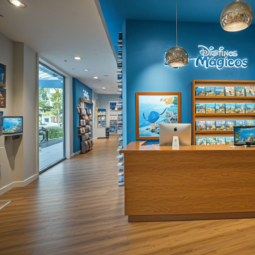

¿Por qué elegirnos para tus próximas vacaciones?
Destinos Mágicos: Donde los Sueños Despegan
En un pequeño rincón de la ciudad, donde los mapas antiguos adornaban las paredes y el aroma a café recién hecho invitaba a soñar, nació Destinos Mágicos. Fue en el año 2005 cuando [Nombre del fundador], un apasionado viajero con una innata capacidad para descubrir tesoros escondidos en cada rincón del mundo, decidió compartir su pasión con los demás.
Con una maleta llena de sueños y una guía turística bajo el brazo, [Nombre del fundador] abrió las puertas de su pequeña oficina. Al principio, eran pocos los que se aventuraban a confiar en un joven emprendedor con una idea tan ambiciosa. Sin embargo, su entusiasmo y su conocimiento de los destinos más exóticos pronto comenzaron a dar sus frutos.
Poco a poco, Destinos Mágicos se convirtió en el referente para aquellos que buscaban algo más que unas simples vacaciones. Los clientes de [Nombre del fundador] no solo buscaban sol y playa, sino experiencias auténticas, aventuras inolvidables y la oportunidad de conocer culturas diferentes.
A medida que la agencia crecía, también lo hacía su equipo. Se unieron a [Nombre del fundador] un grupo de jóvenes profesionales, cada uno con su propia especialidad: expertos en destinos, guías turísticos, traductores y organizadores de eventos. Juntos, crearon una red de contactos en todo el mundo, lo que les permitió ofrecer a sus clientes una amplia gama de servicios, desde la reserva de vuelos y hoteles hasta la organización de itinerarios personalizados y la contratación de guías locales.

Con el paso de los años, Destinos Mágicos se consolidó como una de las agencias de viajes más prestigiosas del país. Sus clientes hablaban maravillas de sus viajes, y las redes sociales se llenaron de fotos y comentarios positivos. La agencia había logrado su objetivo: hacer realidad los sueños de viaje de sus clientes. Hoy en día, Destinos Mágicos sigue siendo un referente en el sector turístico. Su compromiso con la calidad, su pasión por los viajes y su atención al detalle hacen que cada viaje sea una experiencia única e inolvidable.
Los últimos años han sido de constante crecimiento y evolución para nuestra agencia. Hemos logrado consolidarnos como un referente en el sector, gracias a nuestro compromiso con la excelencia y la satisfacción del cliente. Los datos que se presentan a continuación son una muestra tangible de nuestros logros.
| Año | Destinos | Clientes sastifechos |
|---|---|---|
| 2023 | 50 | 98% |
| 2022 | 45 | 97% |
| 2021 | 40 | 95% |
Visitanos